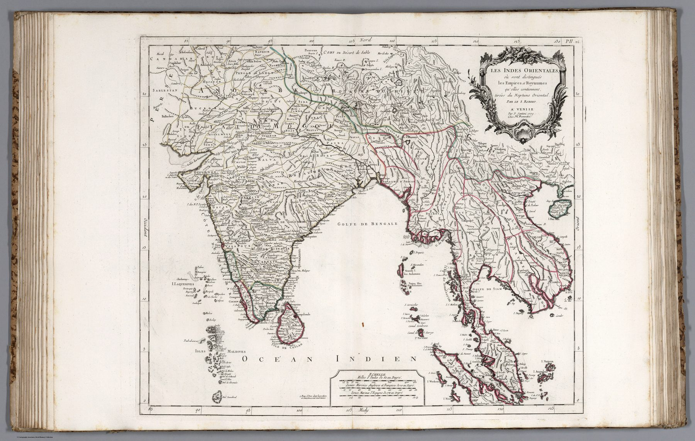

← The Great Mogul and the Companies

The object and its issue
The plate is dated 1779 and credits Santini and ‘Robert’, referring to the Robert de Vaugondy cartographic lineage. It was incorporated into the Remondini atlases at Venice and reissued after that date.
Re-engraving as publication
The French model was recut for an Italian publishing market. Cartographic authority circulated through copying, translation, new engraving and altered commercial presentation.
A settled atlas image
The East Indies appear within the mature mid-eighteenth-century French geographical tradition. Its forms are clear and authoritative, but much of the content remains inherited and compiled. The sheet stands close to the chronological threshold at which Rennell and later surveyors would claim a different basis of authority: measurement from within.
On the sheet
The cartouche names its source: tirées du Neptune Oriental – the East Indies taken from d’Après de Mannevillette’s sea-atlas, the same work whose plan of Bombay hangs in Room 04. The scale bars are a sailor’s too: Italian miles of sixty to the degree, English and French marine leagues of twenty, Spanish of seventeen and a half. Inside the frame the political names are the mid-century French ones, Etat du Mogol across the north, Royaume de Golconde, Royaume de Bisnagar and Carnate in the peninsula, Decan and Visapour, the kingdoms outlined in wash and the Golfe de Bengale open in the middle. The plate is numbered P.II.36 for its place in the Remondini atlas.
The gaze
Remondini found buyers in Venice for Vaugondy’s India. That is the measure of the shared repertoire: a Paris outline recut in Italy sold as geography, not as French geography, three years before Rennell’s first Hindoostan began to replace it. The sheet stands at the edge of the period when compilation could still pass for the whole.